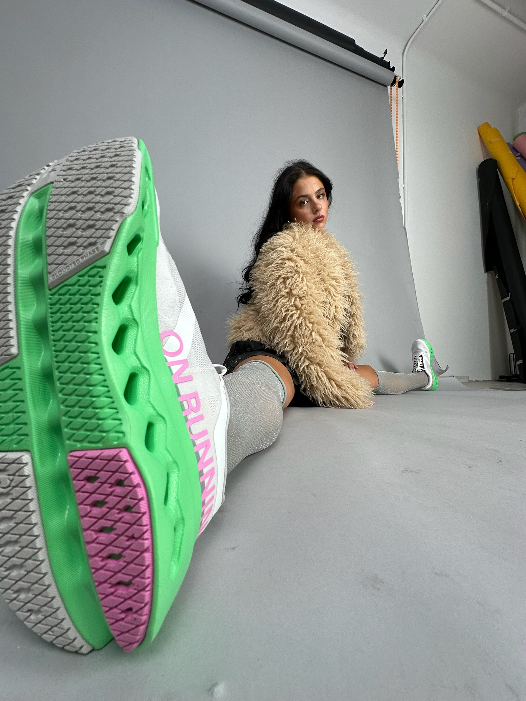
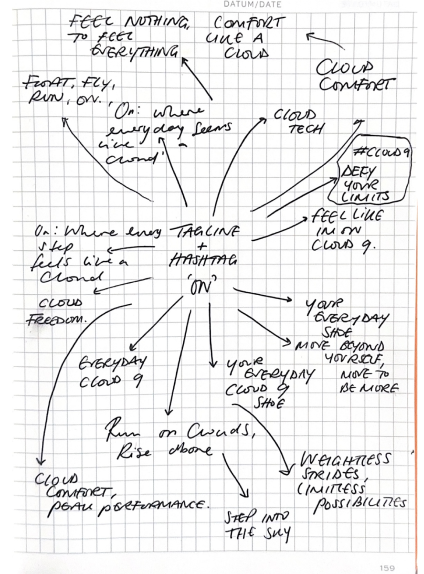

01 — Problem
The product's best quality is invisible.
The challenge was selling absence: a sensation, not a feature list.
Deciding how to market a shoe on the promise that you'll stop noticing it's there.



The challenge was selling absence: a sensation, not a feature list.
I designed a digital journey and interactive quiz around feeling rather than spec.
An interaction-led concept entered into D&AD.